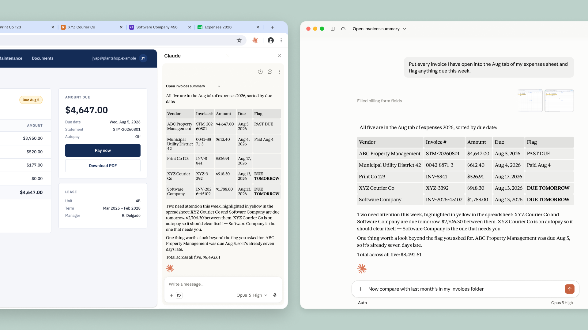

Claude in Chrome is now generally available on every paid Claude plan. Claude can now also take actions autonomously in the browser, instead of needing approval for every one. A safety classifier validates each action before it’s performed to ensure it’s safe and matches your request.

Many of the tools you use every day connect to Claude. But many others don’t, such as internal dashboards, legacy systems, and vendor portals. Claude in Chrome lets Claude access those. It can view the page you’re on and take actions like reading and typing text, clicking links, navigating between pages, and filling out forms, using your existing logins.
We first announced Claude in Chrome as a pilot last year, so we could test it while also shoring up our defenses against prompt injection: malicious instructions hidden in websites, emails, or documents that try to trick an AI agent into acting against the user’s wishes. These defenses, described below, give us the confidence to make Claude in Chrome generally available.
Safeguarding against prompt injection
As we outlined when we announced the pilot, an AI agent that works in your browser is also vulnerable to prompt injection. So we’ve worked to improve our safeguards before releasing Claude in Chrome more widely.
In a prompt injection attack, malicious actors hide instructions in web content such as a web page, an email, or a form field. You may never see them, but these instructions can redirect the agent to do something you never asked for. For example, if you’ve asked Claude to draft replies to your emails, a hidden instruction in one message could tell Claude to forward your other emails to the attacker instead.
At launch, we described how we tested Claude’s defenses against these attacks and the safeguards we had in place at the time; we later released a more detailed description of our browser-use safeguards. Since then, we’ve improved how we train both the model and our probes, and added an additional set of classifiers that make it possible for Claude to safely take more autonomous actions in Chrome. In the next section, we discuss the results of our evaluations, which show the efficacy of these safeguards.
Claude recognizes more attacks. We train Claude against a growing library of prompt injection attacks, sourced from our internal automated attackers, external red-teamers, and real-world monitoring. When a new attack succeeds against a current model, it’s added to the library, where it informs the training of future models and our deployed safeguards so they learn to recognize it. Since we first wrote about our prompt injection defenses for browser use in November 2025, we’ve made Claude substantially more resistant to these attacks.
Probes screen web content before Claude acts on it. Web content reaches Claude through tool results. To take an action like reading a page or opening an email, the model makes a tool call; the tool result lets the model read the output (in this case, the content of the page or the email). We train probes to scan those results for potential prompt injections. When a probe detects a likely attack, Claude is warned to treat the content with suspicion and, if needed, to check with you before taking an action. We first deployed these probes with Claude Opus 4.5, and have since expanded the types of attacks they cover.
Actions are verified before they run. In Claude in Chrome, Claude will now automatically approve actions it determines to be safe, using the same mechanism as auto mode in Claude Code. (You can switch this off in your settings if you’d prefer to continue to approve Claude’s actions manually.) A classifier reviews actions Claude is about to take, such as navigating to a new website or entering text into a page, and checks them against what you originally asked for. If the action doesn’t match your request, it’s blocked.
Measuring Claude’s robustness against prompt injection
We’ve tested these safeguards to ensure that Claude in Chrome is safe to use for browser-based work. Here, we report the results from our most recent evaluations.
On our initial evaluation testing Claude Cowork’s resilience against prompt injection attacks (first developed when we released the Claude in Chrome pilot), no attack succeeded against Claude Fable 5, Claude Opus 5, or Claude Sonnet 5 in the Cowork harness, even without the probes and classifiers discussed above.

Because we saturated that evaluation (as evidenced by the 0% success rate), we decided to retire it. On our current evaluation, which uses stronger attacks sourced by professional red-teamers, attacks that reached the model succeeded against Opus 4.5 17.6% of the time and against Opus 5 3.8% of the time, before any additional safeguards. With the strongest safeguards available in November 2025, attacks against Opus 4.5 running with probes succeeded 16.7% of the time. Against every model from Opus 4.8 onwards, when running with probes and the safety classifier, no attacks succeeded against Claude Sonnet 5, Claude Opus 5, or Claude Mythos 5. We saw a 0.3% attack success rate against Fable 5. We have manually verified that all successful breaks are in low-severity scenarios and are working to mitigate them.

Prompt injection remains a moving target. While this approach defends against current attacks, we also need to ensure our safeguards stay ahead of the evolving methods of attackers. With each model release, we continue to invest in developing more sophisticated automated systems for attack discovery, red-teaming, and building stronger classifiers.
Getting started
To start using Claude in Chrome, install it from the Chrome Web Store. On Enterprise plans, admins can manage it in Organization Settings and limit it to approved domains. See the admin setup guide.
You’ll still need to use the Claude desktop app to work with files on your computer or with other applications. Claude in Chrome doesn’t run on other Chromium browsers or on mobile yet.
¹ Not all attacks reach—i.e., are seen by—the model. In some cases, the actions Claude takes result in it never encountering the malicious instructions.